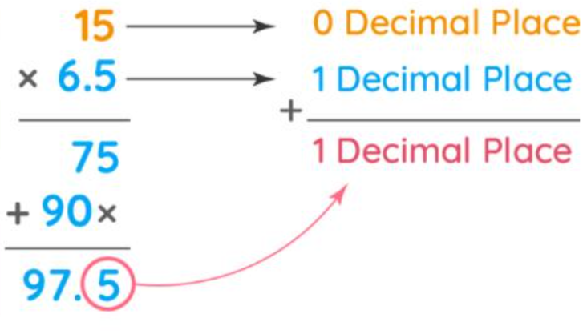
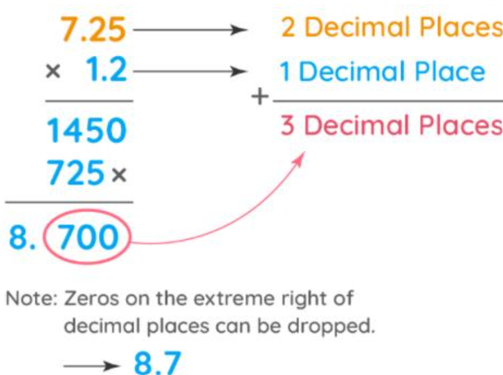

Today we are going to learn about:
- Multiplying decimals with exponents where base is 10
- Rounding decimals
- Converting percentage to decimals
- Multiplying two decimal numbers
How do you determine where to place the decimal point in the product when multiplying two decimal numbers?
Multiplying Decimals
Multiplying decimals with whole numbers is similar to the multiplication of whole numbers, but with attention to the decimal point placement.
- Initially, ignore the decimal point and multiply the two numbers normally.
- After multiplication, count the number of decimal places in the decimal number. The product obtained after multiplication will have the same number of decimal places.
- Place the decimal point in the obtained product following Step 2.
For example: 15 x 6.5 = 97.5
Multiplying Decimals by Powers of 10:
While multiplying any decimal by 10, 100, 1000, or any other power of 10, we just simply shift the decimal point towards the right as many places as the number of zeros in the power of 10.
- If we multiply a decimal by 10, we shift the decimal point one place towards the right, as there is 1 zero in the number 10.
- If we multiply any decimal by 100, we shift the decimal point two places towards the right.
- Similarly, if we multiply a decimal by 1000, we shift the decimal point by three places towards the right, and so on.
- 2.32 × 10 = 23.2
- 2.32 × 100 = 232
- 2.32 × 1000 = 2320
Multiplying Two Decimal Numbers
It is the same as that of the whole number, but the only difference is that in this we have to take the sum of the total number of decimal places in both the given numbers and that needs to be equal to the number of decimal places in the product. To multiply two decimals, follow the steps listed below:
- Initially, ignore the decimal point and multiply the two numbers normally.
- After multiplication, count the total number of decimal places in both the numbers. The product obtained after multiplication will have this total number of decimal places.
- Place the decimal point in the obtained product following Step 2.
For example: 7.25 x 1.2 = 8.7
Rounding Numbers
Rounding numbers means adjusting the digits of a number in such a way that it gives an approximate value. This value is an easier representation of the given number.
Rounding Rules for Decimal Numbers
Rounding rules for decimal numbers are as follows:
- Determine the rounding digit and look at its right-hand side.
- If the digits on the right-hand side are less than 5, consider them as equal to zero.
- If the digits on the right-hand side are greater than or equal to 5, then add +1 to that digit and consider all other digits as zero.
Percentage to Decimal
Percent to decimal conversion is done by shifting the decimal point to two places towards the left and removing the percent sign (%). For example, if 1% is given, its decimal conversion is 0.01.
Converting Percentage to Decimal
Percent is a ratio or a fraction in which the whole is always taken as 100. So, 3% means 3 parts out of 100, and 10% means 10 parts out of 100. While a decimal is a form of writing numbers in precise form using a decimal point. For example, 3.5 means 3 full parts and one half (0.5) part.
To convert a percentage to decimal, follow the steps given below:
- Remove the percentage sign (%)
- Put a decimal point by taking two jumps from the right side towards the left.
For example, let us convert 30% to a decimal. 30% can be written as 30 without the percent sign. Now, it is a whole number so consider the decimal point at the right end. 30 is the same as 30.0. Now, by shifting the decimal point two places towards the left, we get 0.3. Therefore, 30%=0.3.